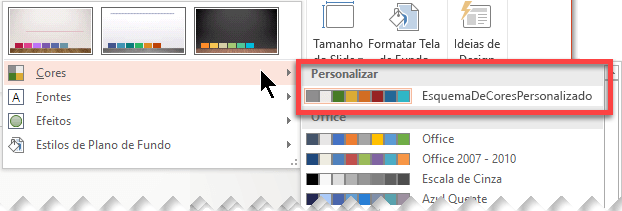

Escolha um tema Ao abrir o PowerPoint, você verá alguns modelos e temas internos. Um tema é um design de slide que contém correspondências de cores, fontes e efeitos especiais como sombras, reflexos, dentre outros recursos. 1. Na guia Arquivos da Faixa de opções, selecione Novo e, em seguida, escolha um tema. PowerPoint exibe uma visualização do tema, com quatro variações de cor para escolher no lado direito. 2. Clique em Criar ou selecione uma variação de cor e clique em Criar.
Para criar um tema personalizado, comece com um tema interno do Office e modifique-o alterando qualquer uma das cores, fontes ou efeitos: 1. Alterar as cores, fontes e configurações de efeitos do tema 2. Salvar as configurações como um novo tema na galeria de temas Essas etapas são descritas abaixo. Alterar as cores: As cores do tema contém quatro cores de texto e de plano de fundo, seis cores de ênfase e duas cores de hiperlink. Por exemplo, você pode ver a aparência das cores e dos estilos de fonte do texto antes de decidir a sua combinação de cores. 1. Na guia Design, no grupo Variantes, selecione a seta para baixo para abrir a galeria de variantes de cor: 2. Selecionar Cores e clique em Personalizar Cores. A caixa de diálogo Criar Novas Cores do Tema é aberta. 3. Na caixa de diálogo Criar Novas Cores de Tema, em Cores do tema, faça o seguinte: 4. Selecione o botão ao lado do nome do elemento de cor do tema (por exemplo, Ênfase 1 ou Hiperlink) que você deseja alterar e escolha uma cor em Cores do Tema. Selecione Mais Cores e siga um destes procedimentos: Na guia Padrão, selecione uma cor. Na guia Personalizado, insira um número de fórmula de cor referente à cor exata desejada. Repita para todos os elementos de cor de tema que você deseja alterar. 5. Na caixa Nome, digite um nome apropriado para a nova combinação de cores do tema e selecione Salvar Dica: Se quiser retornar todos os elementos de cor do tema para suas cores originais, selecione Redefinir antes de selecionar Salvar. 6. Depois que você definir um esquema de cores, ele estará disponível no menu suspenso Cores:  Alterar fontes do Tema: Alterar as fontes do tema atualiza todo o texto de título e com marcadores na apresentação. 1. Na guia Exibir, selecione Slide Mestre. Em seguida, na guia Slide Mestre, selecione Fontes e, em seguida, Personalizar Fontes. 2. Na caixa de diálogo Criar Novas Fontes de Tema, nas caixas Fonte do título e Fonte do corpo, selecione as fontes que você deseja usar. 3. Na caixa Nome, digite um nome apropriado para as novas fontes do tema e selecione Salvar Salvar as alterações Salve as alterações feitas nas cores, nas fontes e nos efeitos como um tema (arquivo .thmx). Dessa maneira, você pode aplicar esse novo tema a outras apresentações. 1. Na guia Exibir, selecione Slide Mestre. Em seguida, na guia Slide Mestre, selecione Temas. 2. Clique em Salvar Tema Atual. 3. Na caixa Nome do arquivo, digite um nome apropriado para o tema e clique em Salvar. Visão geral dos temas Um tema é um esquema de cores, fontes e plano de fundo que você aplica aos slides de design. Usar um tema dá sua apresentação uma aparência harmonioso facilmente. Texto e elementos gráficos assumirá automaticamente no tamanho, cores e posicionamento definida pelo tema, o que significa menos trabalho manual como criar slides individuais. Depois de criar um tema, está localizado na guia Design na galeria Temas. Para testar um tema, coloque o ponteiro do mouse sobre um miniatura na galeria Temas e observe como altera a aparência do seu slide.